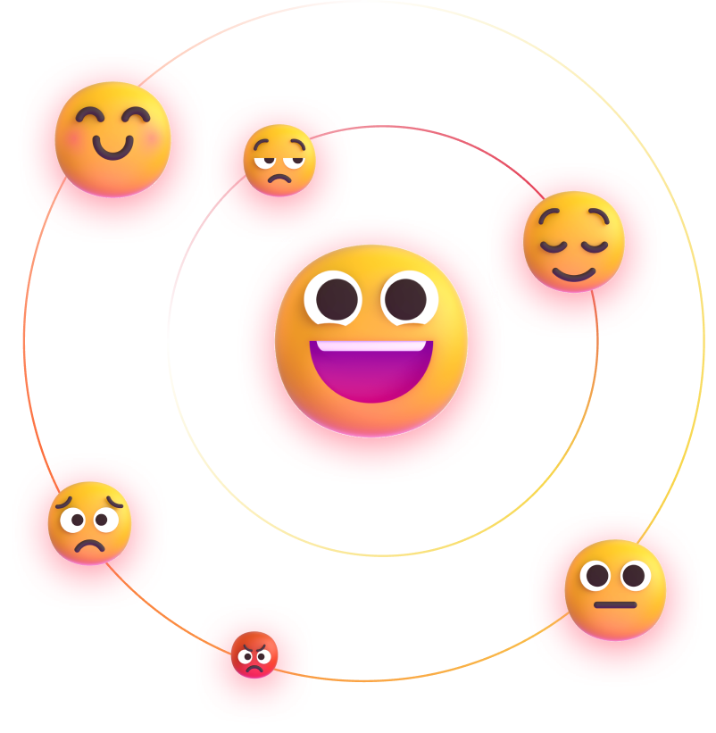
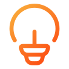
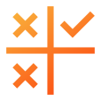
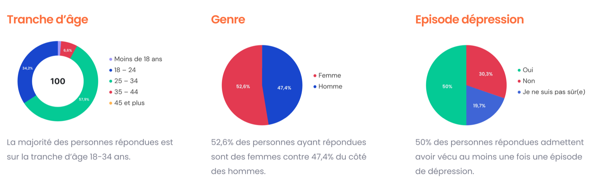
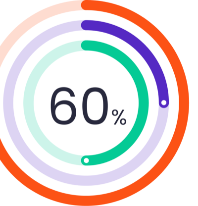
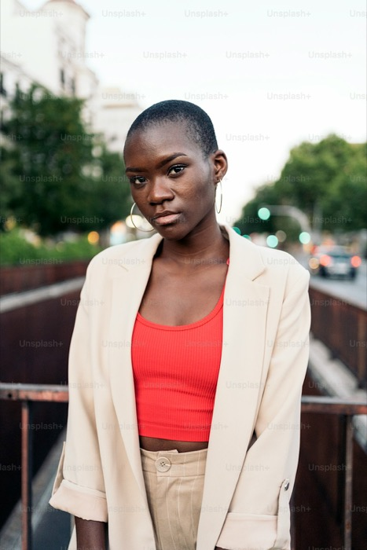
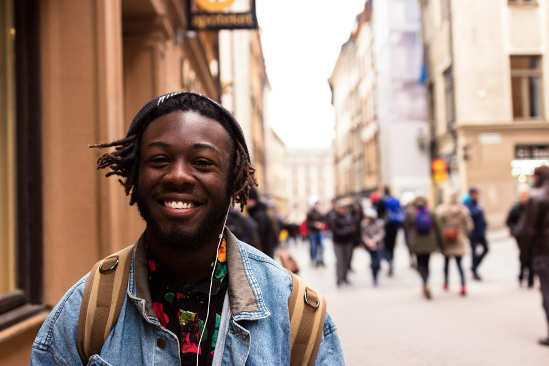

« Je ressens parfois le poids de la société, des attentes et du quotidien, au point de me sentir au bord de la dépression. J’aimerais avoir une application qui m’aide à traverser ces moments difficiles, à mieux comprendre ce que je ressens et à retrouver un équilibre mental. »

Context
Au Sénégal, de nombreux jeunes font face à une intensification des pressions sociales, académiques et professionnelles.
Une augmentation notable de la détresse psychologique est observée, alimentée par l’absence de dispositifs de prévention, d’outils adaptés à leurs réalités, et d’un accompagnement personnalisé.
Ce projet vise à créer une application version desktop et mobile simple et bienveillante pour les aider à mieux gérer leur santé mentale.
Design Sprint Processus
« Le design sprint est une méthode permettant de designer un produit et/ou service en un temps court (5 jours) et ce, de manière organisée. La limite du temps et l’organisation précise des tâches permettent d’aboutir rapidement à un résultat concret, en s'appuyant sur l'approche design thinking. »
Définition
Recherche quantitative
User Personas
Carte d’empathie

Idéation
Démos inspirante
Crazy 8’s
Wireframe
Conception
UI Kit
Design haute fidélité
Prototype
Prototype

Test
Interview utilisateur
Itération
Phase 1 : Définition
Recherche quantitative
Nous avons réalisé une enquête en ligne auprès d’environ 70 utilisateurs appartenant à notre tranche démographique cible.

Causes de mal-être
Les causes de mal-être citées sont multiples :
Solitude, relations familiales ou amoureuses difficiles
Charge de travail, pression des études
Comparaison constante sur les réseaux sociaux
Manque de direction dans la vie ou incertitude sur l’avenir
Aide professionnelle : accès à un psychologue ou coach
Support instantané : chatbot, ressources de soutien
Activités bien-être : méditation
Besoins utilisateurs
Un outil intuitif pour noter et visualiser leurs émotions, leurs niveaux d’énergie ou de stress au quotidien.
Un endroit où ils peuvent librement écrire, enregistrer ou dessiner leurs pensées, sans peur d’être jugés.
Des pratiques concrètes (ex. : respiration, écriture guidée, auto-questionnaires) qui sont accessibles sans jargon.
Disposition d’un tableau de bord, bilans réguliers leur permettant de faire un état des lieux de leur santé mentale.

Users Personas

Awa
Age
22 ans
Statut
Etudiante en licence
Lieu
Dakar
Genre
Féminin
« J’ai l’impression de stagner dans ma vie. Je veux avancer, mais je me sens toujours fatiguée… »
Objectifs
Retrouver un équilibre mental au quotidien
Pouvoir exprimer ses émotions librement, sans jugement
Avoir des outils simples pour comprendre ce qu’elle ressent
Se sentir accompagnée même sans consulter un professionnel
Frustrations
Elle ne sait pas comment gérer son mal-être
Elle a peur d’être jugée si elle en parle autour d’elle
Elle ne veut pas d’une app trop complexe ou culpabilisante
Elle doute de l’efficacité réelle d’une application
Awa vit des épisodes de fatigue mentale et de baisse de motivation. Elle n’a jamais consulté un professionnel et garde tout pour elle. Elle est très exposée aux réseaux sociaux, ce qui accentue son anxiété et son sentiment d’inaction.

Mamadou
Age
29 ans
Statut
Employé
Lieu
Thies
Genre
Masculin
« Je fais semblant d’aller bien, mais à l’intérieur, c’est un peu le chaos. »
Objectifs
Garder le contrôle sur sa santé mentale sans exposer sa vulnérabilité
Trouver des moyens de ralentir mentalement malgré le rythme de travail
Accéder à un soutien discret et personnalisé
Comprendre ses états émotionnels sans forcément parler à quelqu’un
Frustrations
Il n’a pas le temps pour une routine mentale exigeante
Il redoute de s'engager dans quelque chose qu’il n’arrivera pas à suivre
Il ne trouve pas d’outil qui respecte sa pudeur émotionnelle
Mamadou travaille beaucoup, parfois jusqu’à l’épuisement. Il a connu un épisode dépressif il y a deux ans suite à une rupture. Il en parle rarement. Il ressent encore aujourd’hui un manque de motivation, une anxiété diffuse et une difficulté à décrocher de son téléphone.